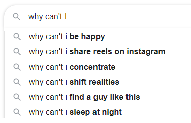

attention conservation notice: ~5400 words split over parts prologue, part 1, part 1.5, part 2 and summary
This is a review I wrote for the SlateStarCodex / AstralCodexTen book review contest. For whatever reason, it never arrived in the pile of contestants, so I’m posting it here instead. This is OK for me: I mostly wrote this for myself and really did enjoy the process. Nonetheless, I’d like others to read it and get some feedback on it (if you want to, use the comment function here). A few more announcements:
- The essay was originally intended for readers in some proximity to the rationalist community (which explains a few references I make along the way)
- I’m not a native english speaker, so feedback on wording and writing style is highly appreciated
- I made some very minor edits (fixed wordings and links in a few places) in the first 24h after posting (including this line here) You can find more reviews by ctrl+f “book review” on the SSC archive or the ACX archive (includes the 14+2 review finalists), find pdfs with 89 other contestant entries at point 3 here (I’ve read them all and they’re really good) and on the bactra review (one of the discoveries I made when doing research for this review). And if you liked this reviw, I have a post in a similar style called “how we discovered the universe”.
Prologue (things this review is not about)
There’s a common theme in all modern philosophical debates: Their struggle for relevance. A few examples:
In 2019, the pop intellectuals Jordan Peterson and Slavoj Žižek met in Toronto for a debate on their philosophies. For the thousands in the live audience, it must have felt like “the debate of the century”, but as this Guardian article notes, it likely was not. If you haven’t heard of the debate before, rest assured: you don’t have to look it up, as it probably won’t be of lasting importance.
In 1971, the philosophers Noam Chomsky and Michel Foucault met in Eindhoven for a debate on their philosophies. This one is much more significant: While we would probably be at mostly the same point today had the 1971 debate not taken place, it’s the perfect studying object for understanding Chomsky, Foucault and the impact their schools of thought have had on the present. But judging by YouTube views and Wikipedia article size, today there’s a lot less interest in the 1971 debate than the 2019 one and I’m one of the viewers who learned of it because of the Peterson-Žižek debate.
In 1929, the philosophers Ernst Cassirer and Martin Heidegger met in Davos for a debate on their philosophies. Today even the Wikipedia article on the Peterson-Žižek debate directly references it. But until 1973, no manuscript was published and the public reception completely ignored that it even took place. If you haven’t heard of the debate before, this is a shame, as it really is significant: While we would probably be at mostly the same point today had the 1929 debate not taken place, it’s the perfect studying object for understanding almost everything that happened in philosophy and western society in the 20th century.
I learned about the 1929 debate and Ernst Cassirer when reading Wolfram Eilenberger’s 2019 book “Zeit der Zauberer” (time of the magicians) in which he follows the four philosophers Wittgenstein, Benjamin, Heidegger and Cassirer through the years 1919 to ’29, with Cassirer the only one I hadn’t even heard of before (I can highly recommend the book, but unfortunately, this review is not about it). As much as I personally dislike Heidegger for later siding with the Nazi party (I should clarify that I don’t know enough for a solid moral judgement and this review is not about Heidegger anyways), I admire Cassirer for being historically right many times and the amount of personal suffering this caused for him. He was in a bad position for many reasons: for being a Jewish philosopher in the 1920’s Germany, for defending the Weimar Republic democracy and after fleeing Germany in the 1930s first to England, then Sweden, then the US, he unexpectedly died of a heart attack in April 1945 (so in case you were wondering why he was almost forgotten, you now have a few hints).
Cassirer’s philosophy started a strange pull and fascination for me. If you divide people into hedgehogs and foxes, Cassirer is as foxy as one can get. He spent an insane amount of time researching various topics way outside of what you would consider “conventional philosophy”, including a book he wrote on Einstein’s then-newly-published theory of general relativity. And he spent years researching myth and language in Aby Warburgs library in Hamburg (again something this review is unfortunately not about – if you haven’t heard of it, you really might want to follow this link). There’s a ~4000 word summary of Cassirer’s cultural philosophy on the German Wikipedia (most of which is suspiciously absent from the English-speaking internet, so your best shot is either to learn German, use an automated translation or simply read on) and reading it, I was hoping that Cassirer could shed a light on a few current topics, including polarization and the crisis of media / communication / science / (insert whatever else sound appropriate to you). This may seem a little bit obscure, but in the Wikipedia article linked above, there’s a good deal of discussion of different views of the world that are non-reducible to each other. Given the number of futile arguments I’ve spent recently where I cannot find common ground at all, both online and offline, it seems that reading Cassirer might be able to help. It couldn’t hurt.
Cassirer’s philosophy of symbolic forms is a 3-volume monster, but shortly before his death, he published a condensed version in english, “an essay on man”, commenting on his reasons against simply translating the then 25-year-old volumes:
Since that time the author has continued his study on the subject. He has learned many new facts and he has been confronted with new problems. Even the old problems are seen by him from a different angle and appear in a new light. For all these reasons I decided to make a fresh start and to write an entirely new book. This book had to be much shorter than the first one. “A big book,” said Lessing, “is a big evil.” (Introduction to an essay on man / page 11)
Reading 250 condensed and updated pages instead of 1200 outdated ones sounds like a good deal, so let’s see what we can get out of it.
Part 1: What is man?
It might really be good to understand our own nature – or at least, this is the question Cassirer starts with. He frames it in the philosophical impetus “know thyself”, but a 21st century view of the question might be all of these combined:

He starts with a 60-page summary of why philosophy failed at this question so far. This makes sense: assuming your question is universally important, why hasn’t anyone already answered it? Unfortunately it’s complicated. Cassirer starts with classical philosophy:
We cannot discover the nature of man in the same way that we can detect the nature of physical things. Physical things may be described in terms of their objective properties, but man may be described and defined only in terms of his consciousness. (…) Man is declared to be that creature who is constantly in search of himself – a creature who in every moment of his existence must examine and scrutinize the conditions of his existence. (…) “A life which is unexamined” says Socrates in his Apology, “is not worth living”. (page20- 21)
… moving on to religion:
Religion shows us that there is a double man – the man before and after the fall. Man was destined for the highest goal, but he forfeited his position. By the fall he lost his power, and his reason and will were perverted. The classical maxim, “Know thyself,” when understood in its philosophic sense, in the sense of Socrates, Epictetus, or Marcus Aurelius, is therefore not only ineffectual, it is misleading and erroneous. Man cannot confide in himself and listen to himself. He has to silence himself in order to hear a higher and truer voice. (page 28)
… enlightenment:
Modern philosophy and modern science had to accept the challenge contained in these words. They had to prove that the new cosmology, far from enfeebling or obstructing the power of human reason, establishes and confirms this power. Such was the task of the combined efforts of the metaphysical systems of the sixteenth and seventeenth centuries. These systems go different ways, but they are all directed toward one and the same end. They strive, so to speak, to turn the apparent curse of the new cosmology into a blessing. (page 32)
Every great thinker – Galileo, Descartes, Leibniz, Spinoza – has his special share in the solution of this problem. Galileo asserts that in the field of mathematics man reaches the climax of all possible knowledge – a knowledge which is not inferior to that of the divine intellect. (…) Descartes begins with his universal doubt which seems to enclose man within the limits of his own consciousness. (…) Leibniz combines this metaphysical proof with a new scientific proof. (…) Mathematical reason is the bond between man and the universe, it permits us to pass freely from the one to the other. Mathematical reason is the key to a true understanding of the cosmic and the moral order. (page 33-34)
… evolution and modern empiricism:
Modern thinkers have held that, after the innumerable fruitless attempts of former times, they have definitely succeeded in accounting for organic life as a mere product of chance. (page 36, on “the Origin of the Species”)
All these philosophers are determined empiricists: they would show us the facts and nothing but the facts. But their interpretation of the empirical evidence contains from the very outset an arbitrary assumption – and this arbitrariness becomes more and more obvious as the theory proceeds and takes on a more elaborate and sophisticated aspect. Nietzsche proclaims the will to power, Freud signalizes the sexual instinct, Marx enthrones the economic instinct. Each theory becomes a Procrustean bed on which the empirical facts are stretched to fit a preconceived pattern. (page 39)
… rationality (you didn’t see this coming, did you?):
Rationality is indeed an inherent feature of all human activities. (…) Language has often been identified with reason, or with the very source of reason. But it is easy to see that this definition fails to cover the whole field. (…) For side by side with conceptual language there is an emotional language; side by side with logical or scientific language there is a language of poetic imagination. Primarily language does not express thoughts or ideas, but feelings and affections. And even a religion “within the limits of pure reason” as conceived and worked out by Kant is no more than a mere abstraction. (page 44)
… and while Cassirer is at it, he also presents an overview of human perception of space and time. I’ll skip that one, as I’ve already included a lot of quotes above. It took several read-throughs to pick them, as Cassirer’s writing turns out to be extremely dense and ambivalent. Remember the comment in the beginning on Cassirer being as foxy as one can get? His writing shows exactly this, being a long stream of considerations, weightings and comments piled on comments.
So in summary, we made progress along the way, but we’re still screwed, hence the google autocomplete suggestions in 2021 I started with (wait, what? But really, Cassirer provides accurate comments):
Such is the strange situation in which modern philosophy finds itself. No former age was ever in such a favorable position with regard to the sources of our knowledge of human nature. Psychology, ethnology, anthropology, and history have amassed an astoundingly rich and constantly increasing body of facts. Our technical instruments for observation and experimentation have been immensely improved, and our analyses have become sharper and more penetrating. We appear, nevertheless, not yet to have found a method for the mastery and organization of this material. When compared with our own abundance the past may seem very poor. But our wealth of facts is not necessarily a wealth of thoughts. (page 40)
Part 1.5 (sorta)
Actually, there’s more to the first part: aside from setting the stage, the historical rundown and why it failed, Cassirer also outlines his approach to how we should think about human nature. Frustratingly, all these parts are mixed together in no particular order, but for brevity, I’ll present his approach separated from the rest (instead of bits spread over chapters 2, 4 and the beginning of part 2 without a clear connection between them).
Since all the previous attempts to understand human nature failed, Cassirer proposes a three-part solution instead:
A) Man is a “symbolic animal”
He presents this spread out over several chapters, but as his point has become absorbed in the water and we can read philosophy backwards, here’s a simpler introduction: Have a look at René Magritte’s picture of a pipe, saying “ceci n’est pas une pipe” (this is not a pipe) and watch your brain screaming “oh yes it is”.
The famous pipe. How people reproached me for it! And yet, could you stuff my pipe? No, it’s just a representation, is it not? So if I had written on my picture “This is a pipe”, I’d have been lying! (René Magritte, quote from the Wikipedia article linked above)
The same magic happens when you watch yourself handling your lover’s letters as if they were delicate objects instead of sheets of paper, or watch children play with bricks and pretend they are animals / cars / houses or whatever else they decide on. While we haven’t figured out yet how symbolic representation in the brain works (21st century reference), for whatever it is, it’s obviously a really important thing about human nature:
Reason is a very inadequate term with which to comprehend the forms of man’s cultural life in all their richness and variety. But all these forms are symbolic forms. Hence, instead of defining man as an animal rationale, we should define him as an animal symbolicum. (page 44)
B) We posed the wrong question from the beginning
The first part extensively argued that we don’t really have a good clue on human’s nature. But rejoice – there is hope! Instead of studying individuals, we could look at the hive mind humanity has become: culture.
Man cannot escape his own achievement. He cannot but adopt the conditions of his own life. No longer in a merely physical universe, man lives in a symbolic universe. Language, myth, art, and religion are parts of this universe. They are the varied threads which weave the symbolic net, the tangled web of human experience. (…) Physical reality seems to recede in proportion as man’s symbolic activity advances. Instead of dealing with the things themselves man is in a sense constantly conversing with himself. (page 43)
The principle of symbolism, with its universality, validity, and general applicability, is the magic word, the Open Sesame! giving access to the specifically human world, to the world of human culture. Once man is in possession of this magic key further progress is assured. (page 55, in a discussion of Hellen Keller and Laura Bridgman, both born deaf and blind, learning words by gestures on their hand palms)
I don’t claim to fully understand this, but I think Cassirer’s reasoning goes like this: humans interact with all things as if they were symbols, so we can do an epistemic inversion: by studying the symbols, we can study humanity. And the best shots we have are the areas that have proven of lasting importance to humans: If it has kept us going over centuries, it’s probably something that mirrors our own nature – not perfectly, but good enough to get a glimpse of what’s underneath. Do this from enough perspectives repeatedly, and you have a chance to complete the picture.
If my summary sounds far-fetched: I wrote the paragraph above before quote-mining part 2 and found this at the beginning:
After this brief survey of the different methods that have hitherto been employed in answering the question: What is man? We now come to our central issue. Are these methods sufficient and exhaustive? Or is there still another approach to an anthropological philosophy? (…) I have endeavored to discover such an alternative approach in my Philosophy of Symbolic Forms. (…) Man’s outstanding characteristic, his distinguishing mark, is not his metaphysical or physical nature – but his work. It is this, it is the system of human activities, which defines and determines the cycle of “humanity”. Language, myth, religion, art, science, history are the constituents, the various sectors of this circle. A “philosophy of man” would therefore be a philosophy which would give us insight into the fundamental structure of each of these human activities, and which at the same time would enable us to understand them as an organic whole. (page 93)
C) Let’s throw everything we have at it
The problem is really hard and Cassirer really wants to solve it, so he will do whatever it takes. In his case, this means thirty years of elaborate study of all disciplines he can master:
It is obvious that in the performance of this task we cannot neglect any possible source of information. We must examine all the available empirical evidence, and utilize all the methods of introspection, biological observation, and historical inquiry. These older methods are not to be eliminated but referred to a new intellectual center, and hence seen from a new angle. (page 93)
This finally brings us to part 2.
Part 2: Man and Culture
Part 2 continues with a detailed discussion of the areas of study Cassirer has identified: Myth, religion, language, art, history, science. This is again him being as foxy as possible; if there is a big idea he has to sell, it’s the one we’ve already discussed and now we’re in for a deep dive into the various disciplines. The book’s reviews and discussions I’ve read stop at this point. But this is one of the reasons I ended up reading the book instead of the summaries, so I’ll pick a few parts I found particularly interesting and comment on them. This selection is highly subjective and if other parts are more interesting to you, I can only direct you to the book itself.
In the chapter on myth, Cassirer argues against discarding myth as superstitious and instead considers it as a universal human trait:
There is no natural phenomenon and no phenomenon of human life that is not capable of a mythical interpretation, and which does not call for such an interpretation. All the attempts of the various schools of comparative mythology to unify the mythological ideas, to reduce them to a certain uniform type were bound to end in complete failure. Yet (….) Anthropologists and ethnologists were often very much surprised to find the same elementary thoughts spread over the whole world and under quite different social and cultural conditions. The same holds good for the history of religion. (…) Even the ethical ideals of different religions are widely divergent and scarcely reconcilable with each other. Yet all this does not affect the specific form of religions feeling and the inner unity of religious thought. (page 98)
To provide a simple example: A few years ago, I learned about the epic of Gilgamesh, one of the oldest stories still available to us today. It’s not intended to be read but to be told, so I can highly recommend listening to a spoken version (I liked this version here, but feel free to pick another one that works for you). Listening to it, I couldn’t shake of a clear resemblance to modern epic storytelling in say Marvel movies. Cassirer would argue this is no coincidence – mythical stories are directly relevant to our human nature. The same applies for emotions, which cannot be reduced to a purely objective description:
If we are under the strain of a violent emotion we have still this dramatic conception of all things. (…) In the new light of science mythical perception has to fade away. But that does not mean that the data of our physiognomic experience as such are destroyed and annihilated. (…) In our human world we cannot deny them and we cannot miss them; they maintain their place and their significance. In social life, in our daily intercourse with men, we cannot efface these data. (page 103)
“Empirically,” says Dewey, “things are poignant, tragic, beautiful, humorous, settled, disturbed, comfortable, annoying, barren, harsh, consoling, splendid, fearful; are such immediately and in their own right and behalf.” (page 104)
Cassirer suggests that we should not look down on the mythic approach to reality (compared to a post-enlightenment, rational-objective approach):
It is a mistake to assume that, at an early stage of development, man lived in a confused world, where the real and the unreal formed a medley, where mysticism and reason were as interchangeable as forged and real coin in a disorganized country. (…) In his ritual of magic or religion, man attempts to enact miracles, not because he ignores the limitations of his mental powers, but, on the contrary, because he is fully cognizant of them. (page 107, quoting Malinowski)
Myth and primitive religion are by no means entirely incoherent, they are not bereft of sense or reason. But their coherence depends much more upon unity of feeling than upon logical rules. This unity is one of the strongest and most profound impulses of primitive thought. If scientific thought wishes to describe and explain reality it is bound to us its general method, which is that of classification and systematization. (…) But the primitive mind ignores and rejects them all. Its view of life is a synthetic, not an analytical one. Life is not divided into classes and subclasses. It is felt as an unbroken continuous whole which does not admit of any clean-cut and trenchant distinctions. (page 108)
I don’t really know how much weight to assign to this. But parts of Cassirer’s reasoning remind me of the SSC review of Joseph Heinrich’s “the secret of our success” that aligns very well with quotes like this:
The animal drawings and paintings that we find in the lowest stages of human culture, in Paleolithic art, have often been admired for their naturalistic character. They show an astounding knowledge of all sorts of animal forms. The whole existence of primitive man depends in great part upon his gifts of observation and discrimination. If he is a hunter he must be familiar with the smallest details of animal life; he must be able to distinguish the traces of various animals. All this is scarcely in keeping with the assumption that the primitive mind, by its very nature and essence, is undifferentiated or confused, a prelogical or mystical mind. (page 109)
Next follows a detailed discussion of death rites in primary structures, of magical rites, ethical rules resulting from them and the transition from myth to religion. He further expounds on religions, including making a distinction between static and dynamic religions. I’ll skip all those and jump back into the book on the role of taboos, which I found particularly interesting. Cassirer argues that taboos served as a way of maintaining social order within emerging cultures, but they slowly turned into a curse as rules pile upon previous rules:
The more the taboo system develops the more it threatens to congeal the life of man to a complete passivity. He cannot eat or drink, he cannot stay or walk. Even speech becomes irksome; in every word man is threatened by unknown dangers. (…) It was here that religion, in its progress, found a new task. But the problem that it had to confront was extremely difficult, and in a certain sense it seemed to be insoluble. In spite of all its obvious defects the taboo system was the only system of social restriction and obligation that had been discovered by man. It was the cornerstone of the whole social order. There was no part of the social system that was not regulated and governed by special taboos. The relation between rulers and subjects, political life, sexual life, family life, possessed no other and no more sacred bond. The same holds for the whole economic life. (…) It was impossible for religion to abrogate this complex system of interdictions. To suppress it would have meant complete anarchy. Yet the great religions teachers of mankind found a new impulse by which, henceforward, the whole life of man was led to a new direction. They discovered in themselves a positive power, a power not of inhibition, but of inspiration and aspiration. They turned passive obedience into an active religious feeling. (page 141)
Cassirer examples include Polynesian tribe culture, Zoroastrianism and Judaism, but the obvious connection for me is today’s reluctance of religions (e.g. conservative Christianity) to overcome previous taboos, (e.g. rules of sexual purity in the wake of better birth control). Cassirer might have argued that dynamic religion could overcome a static religion’s insistence on keeping previous taboos (but he’s not available for comment and I can’t claim any definitive authority on this matter). To me, Cassirer’s attitude looks like an appreciation of various ways of encoding knowledge combined with extreme sympathy for everyone’s honest position. This respect for Chesterton’s fence, combined with a humility towards all, might be a good attitude to discussing any current controversy.
Next up are language, art and history. Unfortunately, these are way outside my normal area of expertise, so I’ll skip ahead to science. If these topics interest you, I encourage you to read them yourself.
Cassirer treats science as a way to make sense of the world, of reducing the world to understandable and predictable patterns:
That there is a regularity, a certain uniformity, in natural events – in the movements of the planets, in the rise of the sun or the moon, in the change of the seasons – is one of the first great experiences of mankind. (…) Here we meet with the first traces of the idea of a general order of nature. (…) Mythical and mathematical language interpenetrate each other in a very curious way in the first systems of Babylonian strology which we can trace back to as early a period as about 3800 B.C. (page 265)
He goes on to discuss how knowledge, mathematics and beauty relate to each other and how we have struggled over the centuries to align abstract concepts (e.g. irrational numbers) with reality. You can think of this as a constant struggle between “intuitively correct” and “scientifically correct” that went on over the centuries:
Quantum mechanics is in a sense the true renaissance, the renovation and confirmation of the classical Pythagorean ideal. But here too it was necessary to introduce a much more abstract symbolic language. When Democritus described the structure of his atoms he had recourse to analogies taken from the world of our sense experience. (…) In Bohr’s model of the atom there is none of this picturesque language. Science no longer speaks the language of common sense-experience; it speaks the Pythagorean language. The pure symbolism of number supersedes and obliterates the symbolism of common speech. (page 270)
I think the example from physics works best, but he adds an analogous discussion of Chemistry and Biology. He then generalizes this to the history of science in general, and that’s it. I’m a little bit disappointed, as this is a harsh contrast to the earlier chapters which I found very rewarding. Maybe there’s just too much that has happened since the 1940s (genetics, computer science, artificial intelligence, the replication crisis, …) and if you’re interested in a philosophy of science, I’d rather recommend e.g. what Paul Meehl had to say on this in the 1980s. So it’s probably good the part on science is so short, as it restricts itself to a framework of how to think about everything that is still to come.
Cassirer closes with a short discussion of what to do with our growing scientific knowledge:
The work of all the great natural scientists – of Galileo and Newton, of Maxwell and Helmholtz, of Planck and Einstein – was not mere fact collecting; it was theoretical, and that means constructive, work. This spontaneity and productivity is the very center of all human activities. It is man’s highest power and it designates at the same time the natural boundary of our human world. In language, in religion, in art, in science, man can do no more than to build up his own universe – a symbolic universe that enables him to understand and interpret, to articulate and organize, to synthesize and universalize his human experience. (page 278)
Here’s my interpretation: After the enlightenment and with increasing scientific knowledge, man has lost his perceived status as “center of the universe”. We are no longer in a special position, rulers of magical power and elevated by the gods. This sucks, but we gained something instead: now that we understand the laws of physics, we can also use our knowledge to harness this material universe that we are subject to. Instead of using magic to fly, we can use technology and instead of living in a world full of mystic creatures, we can discover the actual universe. It reminds me very much of Clarke’s third law, “Any sufficiently advanced technology is indistinguishable from magic”, but infused with the proposition to be the ones who create this magic (ideally in the best way possible, but you could also argue we’ve mostly been good at creating black magic in the last century).
(When I read this last paragraph, it sounds full of pathos, something I didn’t have in mind when I wrote it. So please don’t read this in the style of a superhero narrative but with the dry voice of a German philosopher in mind)
Summary
So, should you read this book? The answer is that I can’t tell.
I started because I really liked Cassirer and because there was a book review coming up. And for me, reading it and writing this review was definitely worth the effort: I got a good rundown of 2000 years of philosophy and cultural history combined with a new sense on how to integrate these topics into a broadly correct and reasonably nuanced picture.
On the other hand, I had to read the book several times to arrive at this point and had it not been for this review, I probably would have given up. Cassirer’s insights have aged amazingly well, with most of his analysis still relevant today, but his price for being right all along is being mind-numbingly ambivalent and obscure in many places. Even as it was written for a general audience, it was a German philosopher’s impression of what a general audience should read in the 1940s. So it’s no easy read and if, say, Andy Clark’s “surfing uncertainty” puts you off, this one will as well.
My main takeaway from the book remains the idea of non-reducible worldviews: The idea that different perspectives cannot be reduced to each other is potentially a powerful one and – while not necessarily unique to Cassirer any more – this might actually help us have more productive debates. I’d argue that this insight spreads to far more areas than those on Cassirer’s list (I could e.g. imagine a more sensible debate on the right COVID pandemic response by acknowledging first that economic, medical and psychological impacts are irreducible to each other).
There’s a lot of good stuff here, once you get past the difficult writing. But to be fair, I might have achieved a similar result by instead reading one of Cassirer’s philosophical colleagues like Heidegger, Wittgenstein or Benjamin, just in a different flavor.
For now, I’m waiting till next year’s book review.
Postscript: All page numbers and quotes from “an essay on man” are from the edition available on archive.org. I’d like to thank Chandler Burke for providing feedback on early drafts of this review.